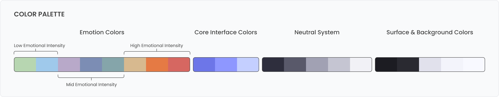
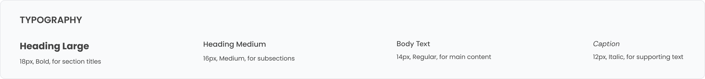
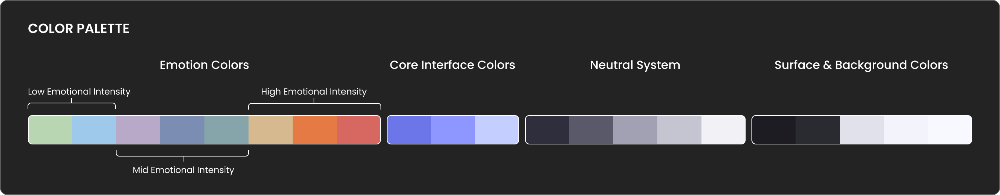
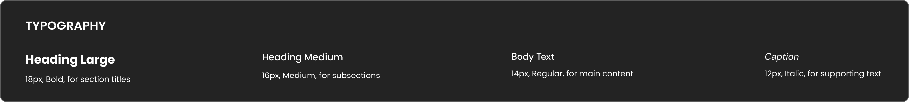

Chrome Extension (Shipped)
Wisp
A gentle approach to emotional awareness designed to reduce mental clutter and help users pause, check in, and reflect without pressure
Overview
Wisp is a lightweight Chrome extension designed to help people pause, notice how they feel, and reflect without pressure. Many emotional tools today feel heavy, clinical, or demand too much attention.
I wanted to design something quieter: a small space that lives in the browser where users can quickly check in with themselves through simple interactions.
What started as a design exploration evolved into a shipped Chrome extension where I handled product design, interaction design, visual design, and front-end implementation.
Quick mood check-in interaction
Exploring mood details and reflections
Simple and calm interaction design
The Problem
Why Emotional Awareness Matters
People move through their days carrying emotional weight they don't notice until it's overwhelming. We're conditioned to stay productive, push through, and keep multiple tabs open, literally and mentally. As a result, emotions often get deprioritized or ignored until they surface later as burnout, anxiety, or emotional exhaustion.
Why existing solutions fall short?
Often feel like homework: open the app, log a mood, answer prompts, track streaks. Instead of reducing pressure, they can create another task to complete.
Require time, space, and cognitive energy people often don't have in the middle of a busy day.
Serve an important purpose, but they aren't designed for quick, in-the-moment check-ins.
THE OPPORTUNITY
What if checking in with yourself felt as natural as opening a new tab?
Why a Chrome Extension?
I chose a Chrome extension because the problem lives in the browser. People spend hours online - working, researching, procrastinating, switching between tabs. The browser is where we're already present, where we're already distracted, and often where we're carrying emotional weight without realizing it.
Meet People Where They Are
No context-switching, no separate app to remember to open.
Ambient Awareness
A subtle presence in the browser rather than a demanding tool.
Reduce Friction
One click from any tab.
The constraints became design clarity:
- Limited space meant focusing only on what truly mattered
- No heavy backend meant designing for simplicity and privacy
- The browser context enabled quick moments of reflection between tasks
Design Process
Research and Personal Insight
I started with my own experience. I knew what it felt like to ignore stress until it became anxiety, to push through exhaustion, and to reach the end of the day realizing I never checked in with myself. I spoke with friends, colleagues, and people in online communities about how they manage emotional awareness. These patterns emerged:
Early Concepts (What I Discarded)
- Guided mood tracker with categories and intensity scales Too clinical and introduced unnecessary friction
- Journaling prompt generator Required more mental energy than users were willing to give in the moment
- Daily emotional dashboard Felt more like surveillance than support
"I realized the problem wasn't that people needed more structure, they needed less."
Core Interaction Model
I stripped everything back to one simple question: What are you feeling right now?
The Flow
- Click the extension icon
- Choose a mood and experience the short interaction
- See a gentle prompt and reflection
- Close the extension and return to what you were doing
No forced choices, no analytics dashboards, no streaks. Just a space to pause.
Information Architecture


The structure prioritizes quick emotional check-ins and keeps the interaction simple, focused, and distraction-free.
Design System and Style Guide
I wanted Wisp to feel like a breath. Every visual decision reinforces the same message: It's okay to take a moment.
I designed a simple visual system to keep the interface calm, readable, and accessible.




Iconography
Emotional states in Wisp are represented through soft animated icons. Instead of rigid emojis or labels, each mood uses subtle motion to feel expressive without being overwhelming.
The icons are designed to be gentle, recognizable, and emotionally neutral, allowing users to interpret their feelings without judgement.
Interactive Prototype
To explore how Wisp works in practice, here's an interactive prototype that simulates the extension experience inside the browser.
It highlights the mood selection interface, animated feedback, and the short grounding interaction designed to support emotional regulation without adding friction.
Feel free to explore the interaction.
Key Design Decisions
What I Simplified
-
Limited mood set
Instead of a long list of emotional labels, Wisp uses a small set of animated icons to make emotional check-ins quick and intuitive.
-
No reminders or notifications
That would defeat the purpose. Wisp is there when you're ready, not demanding attention.
-
No data visualization
Graphs and trends can be useful, but they can also create pressure to optimize emotions.
What I Intentionally Didn't Build
-
Social features
Emotional check-ins should not be performative.
-
Gamification
No streaks, no rewards. Those mechanics undermine gentleness.
-
AI-generated insights
I didn't want the extension to tell users how to feel or what their emotions mean.
Critical Trade-offs
Prioritized reducing overwhelm over accommodating every use case.
No backend meant users' reflections stayed private by default.
Shipped with solid foundation, planned iteration based on real use.
Challenges and Constraints
Technical Limitations
I'm not an engineer, so I designed within the constraints of what a Chrome extension could realistically support without complex backend infrastructure. This pushed me to focus on interaction design and user experience rather than feature complexity, reinforcing the product's core value: simplicity.
Scope Management
The biggest challenge was knowing when to stop designing and start shipping. There were dozens of features I considered, but I kept asking: Does this serve the core purpose, or am I just designing to feel productive? This helped me learn the difference between nice to have and necessary to launch.
Reflection
This project taught me that designing for emotional well-being isn't about adding features, it's about removing barriers. It reinforced that good UX isn't about impressive interactions, it's about making space for people to do what they actually need.
Most importantly, it showed me that I can take an idea from concept to launch. I made decisions, shipped something real, and learned from every step.